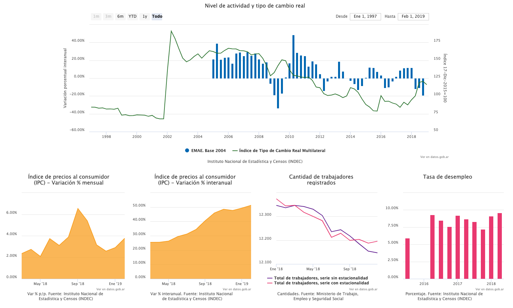

Explorador de Series de Tiempo🔗
El Explorador de Series de Tiempo es una familia de componentes front-end para desarrollar experiencias web a partir de los datos de la API de Series de Tiempo de la República Argentina, donde los organismos de la Administración Pública Nacional publican indicadores en formatos abiertos.
Si querés integrar un explorador completo en tu sitio web (como el de Datos Argentina) leé la referencia de TSExplorer.

Si querés agregar gráficos en tu sitio web leé la referencia de TSComponents.

Versiones de browsers🔗
El Explorador de Series de Tiempo fue desarrolado utilizando versiones recientes de Firefox y Chrome (57+ y 60+), y soporta Internet Explorer desde la versión 11 en adelante.
Si sos usuario de la API de Series de Tiempo y querés estar al tanto de los cambios y novedades, inscribite en la base de contactos de Datos Argentina y elegí sobre qué temas querés que te escribamos.
¿Tenés algo que contarnos? Nos encantaría que nos cuentes por Twitter o por mail qué mejoró usar la API en tu trabajo y qué le falta para mejorar aún más.